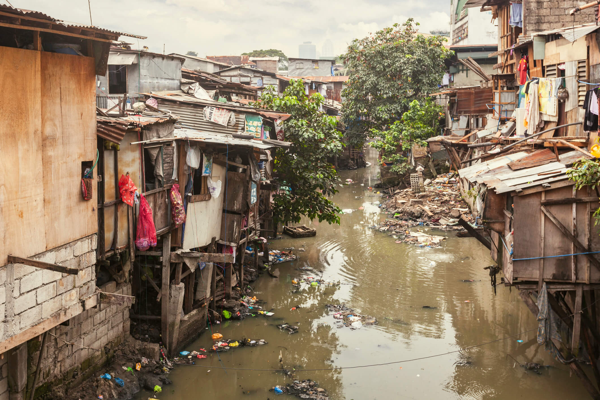
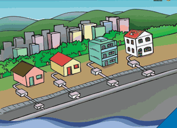

Importância da Água Potável e Saneamento Básico

A água é um recurso fundamental para a vida humana e para o desenvolvimento econômico e social. A falta de acesso à água potável e ao saneamento básico é um problema grave em muitas partes do mundo, afetando principalmente as populações mais pobres e vulneráveis. O acesso à água potável e ao saneamento básico é um direito humano fundamental, reconhecido pela Organização das Nações Unidas (ONU).
ODS

A água potável e o saneamento básico são temas fundamentais da Agenda 2030 para o Desenvolvimento Sustentável, que é composta por 17 Objetivos de Desenvolvimento Sustentável (ODS) definidos pelas Nações Unidas. O ODS 6 tem como objetivo garantir o acesso universal à água potável e ao saneamento básico para todos, além de melhorar a qualidade da água e promover práticas sustentáveis de gestão dos recursos hídricos. A implementação do ODS 6 é fundamental para a erradicação da pobreza, a promoção da saúde e o desenvolvimento sustentável.
Problemas Relacionados ao Acesso à Água Potável e Saneamento Básico
Muitas pessoas no mundo ainda não têm acesso à água potável e ao saneamento básico. Isso pode levar a várias doenças, como cólera, diarreia, hepatite A e outras doenças infecciosas. Além disso, a falta de acesso à água potável e ao saneamento básico pode levar a problemas econômicos e sociais, como a perda de dias de trabalho e a falta de acesso à educação.
Soluções para os Problemas de Água Potável e Saneamento Básico
Para resolver os problemas de acesso à água potável e ao saneamento básico, é necessário investir em infraestrutura e em políticas públicas que garantam o acesso universal a esses serviços. Isso inclui a construção de sistemas de abastecimento de água, redes de esgoto e instalações sanitárias adequadas. Além disso, é necessário promover a conscientização sobre a importância da água potável e do saneamento básico e incentivar práticas sustentáveis de uso da água.
Conclusão
A água potável e o saneamento básico são direitos humanos fundamentais e essenciais para a saúde e o bem-estar das pessoas e para o desenvolvimento econômico e social. A falta de acesso a esses serviços é um problema grave em muitas partes do mundo e deve ser abordado por meio de investimentos em infraestrutura.